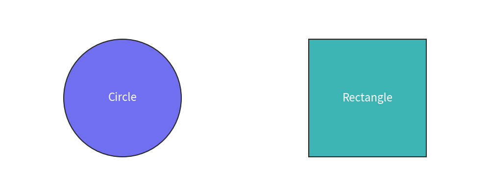

Drawlib Documentation
Drawlib is a pure-Python drawing library and documentation compiler crafted for "Illustration as Code" and "Documentation as Code".
Designed from the ground up for modern software engineering and autonomous AI coding agents, Drawlib eliminates manual GUI drawing tools and brittle image files. Developers and LLM agents can create, version-control, and publish publication-grade architectural diagrams, flowcharts, data charts, and complete multi-page documentation sites entirely from declarative Python code.

Source Code
from drawlib.canvas import setup
from drawlib.shapes import rectangle, circle
from drawlib.lines import line
from drawlib.styles import Styles
setup(width=120, height=45)
# Background Boundary
rectangle((60, 22.5), width=116, height=38, style=Styles.muted_dashed)
# Pipeline stages
rectangle((25, 22.5), width=30, height=18, style=Styles.primary_flat, text="AI Agent / Dev\n(Python Script)", textstyle=Styles.white_bold)
rectangle((62, 22.5), width=28, height=18, style=Styles.accent_flat, text="Markdown\n(```drawlib)", textstyle=Styles.white_bold)
circle((98, 22.5), radius=10, style=Styles.success_flat, text="HTML, PDF\n& Markdown", textstyle=Styles.white_bold)
# Connectors
line((40, 22.5), (48, 22.5), arrowhead="->", style=Styles.bold)
line((76, 22.5), (88, 22.5), arrowhead="->", style=Styles.bold)
Core Pillars
1. AI-Driven Documentation Pipeline
Drawlib is built to empower AI coding agents (such as Claude Code, Cursor, Gemini) to author and maintain technical documentation autonomously.
- Rules & Context Injection: Query targeted syntax rules on demand via
drawlib rules show <topic>. - Multimodal Visual Verification Loop: Agents export drawings with coordinate grids (
-g), visually verify label boundaries and line routing, and self-correct layout issues automatically.
2. Rich High-Level Visualizations
Avoid assembling hundreds of primitive shapes by hand. Drawlib provides production-ready, declarative components:
- SmartArts: Process pipelines (
ChevronProcess), cyclical loops (Cycle), data tables (Table), and trees (Tree). - Data Charts: Pure-Python bar, line, area, pie, radar, scatter, and Gantt charts without external graphing dependencies.
- Technical Diagrams: Cloud architectures (
ArchitectureDiagram), flowcharts (FlowDiagram), API sequences (SequenceDiagram), UML class diagrams (ClassDiagram), ER diagrams (ERDiagram), and state machines (StateDiagram).
3. Integrated Documentation Compiler
Write your technical spec or system architecture in standard Markdown with embedded drawlib blocks. A single command (drawlib build) compiles everything into:
- Responsive HTML Site (
docs_html/): Complete static site with sidebar navigation and instant search. - GitHub Markdown (
docs/): Clean Markdown with syntax-highlighted code and embedded relative images. - Headless PDF (
docs.pdf): Publication-ready vector PDF generated via Chromium.
Documentation Roadmap
Explore the comprehensive guides below:
- Getting Started
- Core philosophy, installation, quickstart, coordinate principles, project scaffolding, and AI agent configuration.
- Drawing Primitives & Styles
- Low-level vector shapes, lines, connectors, typography, icons, image processing, and preset themes.
- SmartArts
- High-level infographics: process pipelines, cyclical loops, data tables, hierarchical trees, and mindmaps.
- Charts
- Declarative data plotting: bar, line, area, pie, radar, scatter, and project Gantt charts.
- Technical Diagrams
- Engineering diagrams: cloud architectures, flowcharts, sequence diagrams, UML class diagrams, ER diagrams, and state machines.
- Document Builder & CLI
- Documentation as Code: Markdown block syntax, CLI reference, project templates (
image,simple,site,pdf), and custom theming.
- Documentation as Code: Markdown block syntax, CLI reference, project templates (
- AI Agents & Advanced Integration
- Autonomous agent instructions, visual self-correction feedback loop, programmatic Python APIs, and math utilities.